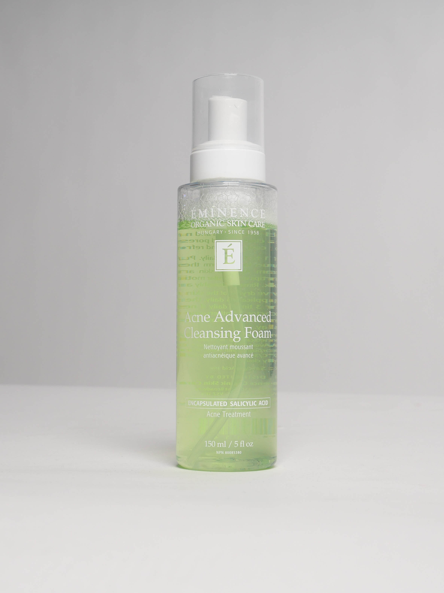
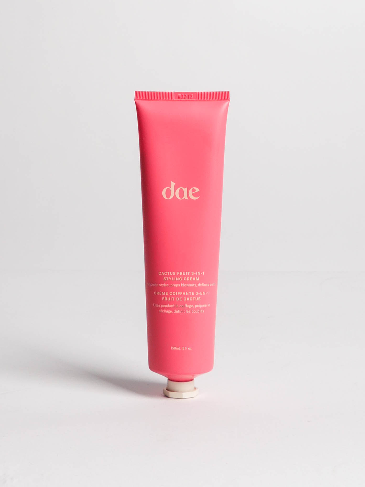

Skin Ceuticals Phyto Corrective Gel

This gel (although more like a serum) is a soothing, moisturizing gel that hydrates skin and relieves it of redness and sensitivity.
I have seen a huge difference in my skin with this product as it has calmed the redness and inflammation in blemishes, yet keeps
my skin hydrated. This is definitely one of my favorite products on the market!
Eminence Acne Advance Cleansing Foam
This product has changed the game for me when it comes to a cleanser. I have always struggled with acne and this facial cleanser
effectively prevents acne and clears blocked pores. It is lightweight and gentle on the skin keeping my face hydrated
and clean without dehydrating it!
CeraVe Moisturizing Cream

One of the best moisturizers out there! Simple and effective, the CeraVe moisturizing cream is a rich, non-greasy, fast-absorbing
moisturizer that keeps my face hydrated. I love this moisturizer because it is an inexpensive, drugstore find that actually works!
dae Cactus Fruit 3-IN-1 Styling Cream
Who doesn’t love a 3-IN-1 product? The dae Cactus Fruit 3-IN-1 styling cream preps blowouts, defines curls, and smooths styles.
Not to mention smells amazing! I am a recent user of this product and I absolutely love it because it doesn’t leave my hair
feeling sticky or crunchy as many hair products do. I use the styling cream for my slick back hairstyles and they have never looked better!
© 2023 Grace McHugh